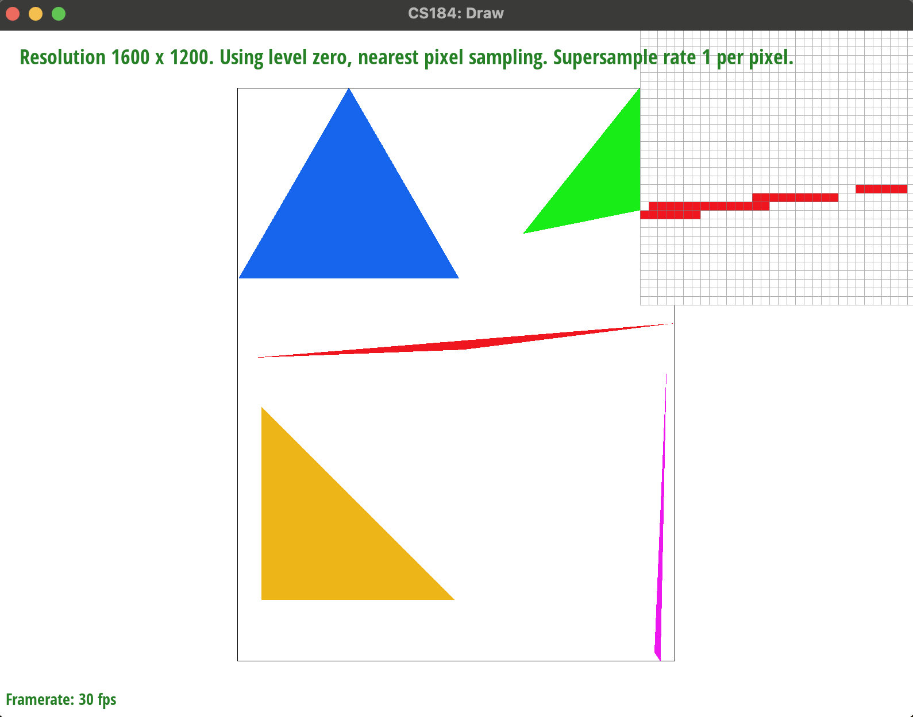

Homework 1
Rasterizer
Jamie Walton
Overview
Give a high-level overview of what you implemented in this homework Think about what you've built as a whole. Share your thoughts on what interesting things you've learned from completing the homework.
Section 1
Rasterization
1. Rasterizing single-color triangles
First, the algorithm determines how much of x- and y-space the triangle
covers to ensure that it does not test any extraneous pixels. It then loops
through every integer coordinate combination within this space and checks
whether the triangle contains the position. To do this, it calculates the
point's distance to each line defining the edge of the triangle-- if the
point has a zero or positive distance from every line, it is within the
triangle. In that case, the corresponding pixel is filled in with the
specified color. Otherwise, the loop continues.
This algorithm specifically checks every pixel within the bounding box,
meaning that it has a comparable efficiency and memory cost as other
bounding box algorithms.

Fig 1. Rendered triangles with the pixel inspector highlighting an aliased region.
2. Antialiasing triangles
3. Transforms
Section 2
Sampling
4. Barycentric coordinates
5. "Pixel sampling" for texture mapping
6. Part 6: "Level sampling" with mipmaps for texture mapping
Section 3